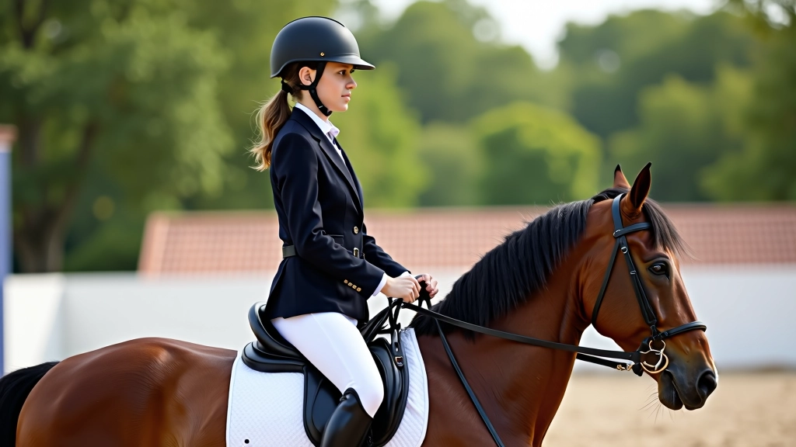
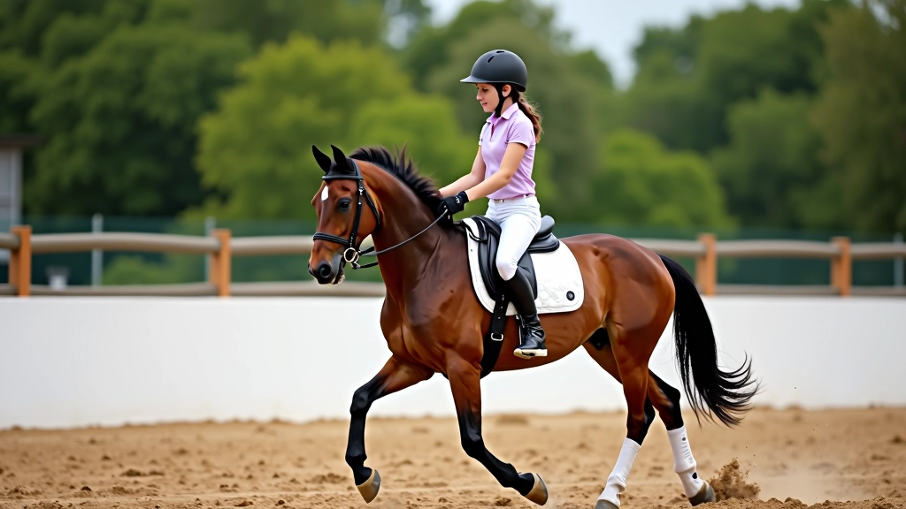
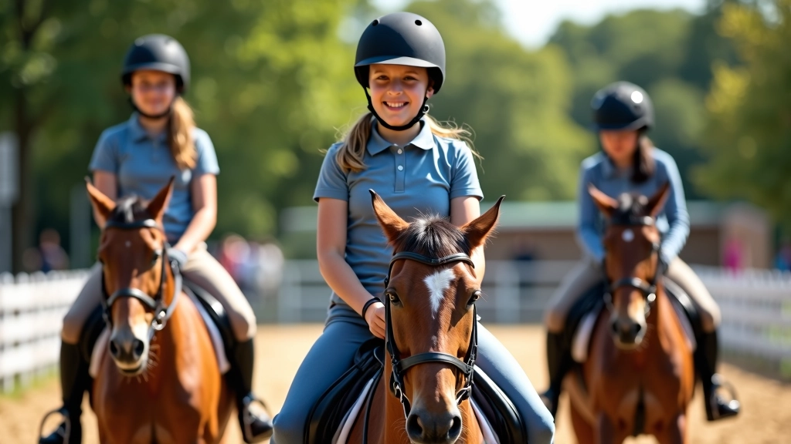

اختيار المعدات الواقية المناسبة
شرح تفصيلي لكيفية اختيار الخوذة والسترة الواقية والحذاء المناسب لممارسة الفروسية بأمان.
تعلم الطريقة الصحيحة للجلوس على الحصان والحفاظ على التوازن أثناء الحركة والتعامل مع الحصان بثقة. هذا الدليل يشرح لك كل ما تحتاجه من تقنيات أساسية لتصبح فارساً آمناً وماهراً.

الجلسة الصحيحة على الحصان ليست مسألة جمالية فقط. إنها أساس الأمان والتحكم والراحة. عندما تجلس بالطريقة الصحيحة، تستطيع التحكم بالحصان بشكل أفضل، وتقلل من إرهاق عضلاتك، وتقلل من خطر السقوط. الفرسان المبتدئون غالباً ما يحاولون الجلوس بطريقة غير صحيحة — متكئين للأمام أو للخلف — وهذا يجعل التوازن صعباً جداً.
التوازن على الحصان يتطلب فهم جسدك وكيف يتحرك مع حركة الحصان. إنه يشبه الوقوف على شيء متحرك — تحتاج إلى مركز ثقل مستقر. لحسن الحظ، هذه مهارة يمكن تعلمها وتحسينها مع الممارسة المنتظمة.
الجلسة الصحيحة تتكون من عدة أجزاء مهمة يجب أن تعمل معاً. لا تركز على جزء واحد فقط — كل شيء مرتبط.
رأسك يجب أن يكون مستقيماً، تنظر للأمام حيث تريد أن تذهب، وليس للأسفل على الحصان أو على الأرض. عندما تنظر للأسفل، يميل جسمك للأمام تلقائياً. حافظ على نظرك عالياً على مستوى الأفق.
أكتافك يجب أن تكون مسترخية وللخلف قليلاً. ظهرك يجب أن يكون مستقيماً — تخيل أن خطاً يمر من رأسك إلى مقعدك. لا تنحنِ للأمام أو للخلف بشكل مبالغ فيه. الكثيرون من المبتدئين ينحنون للأمام من الخوف، وهذا يفقدهم التوازن.
مقعدك يجب أن يكون عميقاً في السرج — هذا هو أساس التوازن. وركاك يجب أن يكونا مستقرين وليسا متحركين. عندما تجلس بعمق، تكون أقرب من الحصان، وهذا يجعل التوازن أسهل بكثير.
ساقاك يجب أن تكونا مباشرة تحت جسمك — ليست للأمام ولا للخلف. قدماك يجب أن تكونا في الركائب بشكل صحيح، مع كعبك أخفض من أصابع قدميك. هذا يعطيك ثبات ويساعدك على الاتصال بالحصان.


التوازن على الحصان يعني أن تكون مركز ثقلك فوق الحصان دائماً. تخيل خطاً عمودياً يمر من خلال رأسك وجسمك — هذا الخط يجب أن يكون فوق الحصان مباشرة، ليس أمامه ولا خلفه.
عندما تتحرك مع الحصان — سواء كان يسير أو يخطو أو يعدو — يتغير توازنك قليلاً. هذا طبيعي تماماً. لا تحاول البقاء ثابتاً بنسبة 100٪. بدلاً من ذلك، تعلم كيف تتحرك معه. فكر في الأمر مثل الرقص — تتحرك معالموسيقى، لا ضدها.
حافظ على جسمك مستقيماً. الحصان يتحرك تحتك بشكل ناعم. لا تحتاج إلى تغيير وضعيتك كثيراً. ركز على البقاء مسترخياً.
هنا يصبح الأمر أكثر قليلاً. يجب أن تتحرك مع الحصان — يمكنك أن تجلس في السرج أو تقفز قليلاً. المبتدئون عادة يجلسون، وهذا جيد. حافظ على اتصال ثابت مع السرج.
العدو أسرع وأكثر سلاسة من الخطوة السريعة. حافظ على جسمك متوازناً وتحرك مع إيقاع الحصان. لا تندفع للأمام. البقاء في الوسط هو المفتاح.
لا تتوقع أن تصبح متوازناً بشكل مثالي في الدرس الأول. التوازن يتحسن مع الممارسة المنتظمة. هذه التمارين ستساعدك على تطوير الشعور بالتوازن والثقة على الحصان.
ابدأ بالجلوس على الحصان وهو ثابت. ركز على جسمك في المرآة — هل تبدو مستقيماً؟ هل أكتافك متساويان؟ هل رأسك فوق جسمك مباشرة؟ صحح أي شيء تراه غير صحيح. افعل هذا كل درس في البداية.
هذا تمرين متقدم قليلاً. المشي على الحصان بدون سرج (مع حبل أمان!) يساعدك على الشعور بجسم الحصان تحتك. ستتعلم مكان مركز الثقل بشكل أفضل. ابدأ بخطوات بطيئة جداً.
بينما تمشي على الحصان، حاول رفع ذراعيك بشكل متوازٍ على جانبي جسمك. هذا يساعدك على البقاء متوازناً — إذا فقدت التوازن، ستشعر به على الفور. افعل هذا لفترات قصيرة فقط في البداية.
أثناء الركوب، اطلب من مدربك أن يصحح وضعيتك بشكل منتظم. قد لا تشعر بالأخطاء بنفسك. يمكنك أيضاً أن تسأل عن تسجيل فيديو لنفسك — مشاهدة نفسك تركب مفيدة جداً.
ابدأ بالجلوس على حصان ثابت وحاول رفع قدميك من الركائب — بحذر! هذا يختبر توازنك الحقيقي. افعل هذا فقط مع حبل أمان وتحت إشراف المدرب.
ركب الحصان عبر مسار معين — يمكن أن يكون خطاً مستقيماً أو منحنى. ركز على البقاء في المنتصف والحفاظ على توازن ثابت. هذا يساعدك على تطوير السيطرة والتوازن في نفس الوقت.
هنا بعض النصائح التي ستساعدك على تحسين جلستك وتوازنك بشكل أسرع. هذه أشياء يمكنك العمل عليها في كل درس.

الجلسة الصحيحة ليست فقط عن الشكل — إنها حقاً عن الأمان. عندما تجلس بشكل صحيح، تكون أقل عرضة للسقوط. وإذا حدث سقوط، فإن الجلسة الصحيحة تساعدك على البقاء متصلاً بالحصان لفترة أطول.
علاوة على ذلك، الجلسة الصحيحة تقلل من إجهاد جسدك. لا تشعر بالألم بعد الدرس. عضلاتك تتقوى بدلاً من أن تتأذى. هذا يعني أنك ستستمتع بالركوب أكثر وستريد العودة للدروس أكثر.
تذكر: الخوذة والملابس الواقية ضرورية دائماً. حتى أفضل الفرسان يسقطون أحياناً. الحماية الصحيحة تجعل الفرق بين إصابة خطيرة وإصابة بسيطة.
تحسين جلستك وتوازنك عملية تدريجية. لا تتوقع أن تصبح خبيراً بسرعة. لكن إذا اتبعت هذه الإرشادات وركبت بانتظام، ستشعر بالتحسن في غضون بضعة أسابيع.
الشيء الأهم هو أن تبقى متحمساً والتعلم من كل درس. اسأل مدربك عن أي شيء لا تفهمه. راقب الفرسان الأكثر خبرة — يمكنك تعلم الكثير من ملاحظة كيفية جلوسهم. والأهم من كل شيء، استمتع برحلتك!
الآن بعد أن فهمت أساسيات الجلسة والتوازن، اقرأ عن الموضوعات المرتبطة:
كيفية التعامل الآمن مع الحصان قواعد السلامة في الحلقة التدريبيةهذا الدليل مخصص للأغراض التعليمية والإعلامية فقط. لا يقدم نصائح متخصصة أو استشارات فردية. الفروسية رياضة يمكن أن تكون خطيرة، وتتطلب تدريباً مناسباً تحت إشراف مدرب مؤهل. نصائح هذا الدليل لا تحل محل التدريب الشخصي المباشر من مدرب متخصص. كل فارس وكل حصان مختلف، وقد تحتاج إلى تعديلات فردية.
استخدم هذه المعلومات كنقطة انطلاق فقط. دائماً استشر مدربك قبل محاولة أي تقنية جديدة. احرص على سلامتك والبس معدات حماية مناسبة في كل مرة تركب فيها.

فريق التحرير
كتبه فريق تحرير فارس الأمان، متخصص في تقديم إرشادات عملية وموثوقة حول سلامة الفروسية للناشئين.
شرح تفصيلي لكيفية اختيار الخوذة والسترة الواقية والحذاء المناسب لممارسة الفروسية بأمان.

قواعد التعامل الآمن مع الحصان قبل وبعد الركوب وكيفية بناء ثقة متبادلة بينك وبين حصانك.

اكتشف القواعد الأساسية التي يجب اتباعها في حلقة التدريب لضمان سلامتك وسلامة الآخرين.